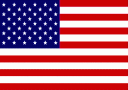

Douglas StamperStamper was born in Naperville, Illinois. His family later moved to Columbus, Ohio. Unlike his brother, he never saw the appeal of settling down with a wife and children, and moved to Washington, D.C. to further his career. Doug's sense of identity is dependent on his role as Frank Underwood's right-hand man. To preserve this, he will go to any lengths to serve and protect Frank. An example of this is when he offered to give up his liver for a transplant that Francis required whilst in hospital after being shot in season 4.
In Season 1, Stamper used Rachel Posner to seduce Peter Russo, compromising his pledge of sobriety, which led to Russo's failed candidacy and eventual death. Also, Stamper was a recovering alcoholic with 14 years sober, he regularly attended Alcoholics Anonymous meetings. He used that fact to keep Russo clean for the necessary time, sponsoring and taking Russo to meetings.
When Posner met Zoe Barnes for an impromptu conversation about Russo's death, and Underwood's ascension to the Vice Presidency, Posner chose to have her own personal life played out in the press rather than rat out Stamper and Underwood's plan. Doug moved Rachel out of the public eye and forced her to live in a new apartment in Joppa, Maryland away from Washington. He also disapproved of, and attempted to sabotage her relationship with Lisa Williams. This caused much tension between them and led to Rachel snapping and escaping from his car as he transported her away from Joppa.
Doug was also used by Frank Underwood to investigate the dealings between Raymond Tusk and Xander Feng, monitoring the Native American casino they used to launder campaign money. He later flew to Beijing to meet with Feng on Underwood's behalf.
Quiet, cold, and calculating, Stamper is a vital cog in Underwood's political machine, serving as his chief of staff. His talents for discretion and subterfuge allow him to be ruthlessly efficient.
Stamper has demonstrated a willingness to control his targets mainly through coercion. Due to his proven skills and decades-long loyalty, Underwood fully trusts Stamper, giving him a high degree of autonomy in his work. However, Underwood is initially reluctant to bring him back on board during season 3 due to Stamper's physical and mental instability.